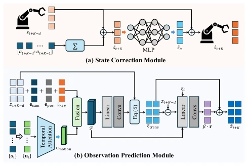
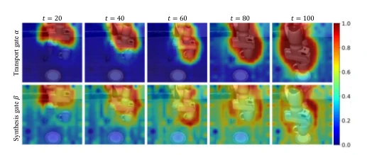
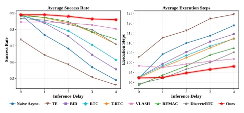
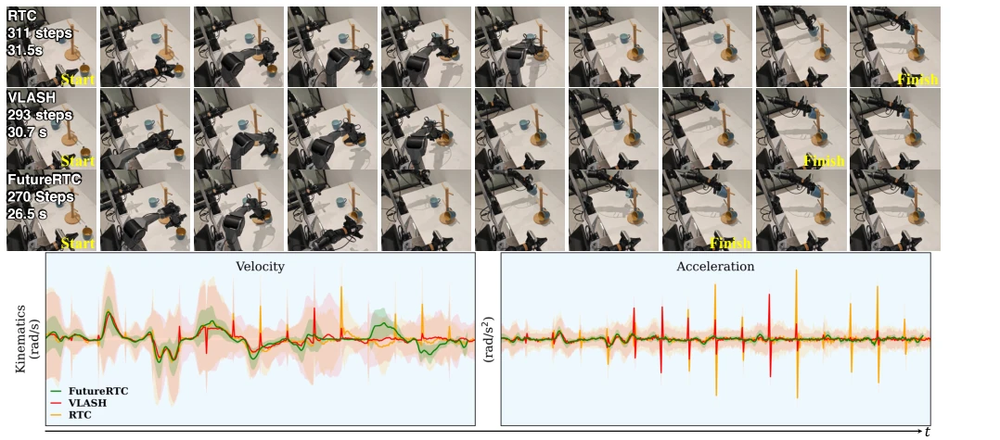
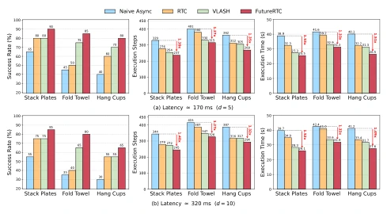
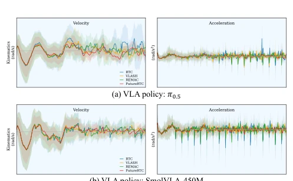
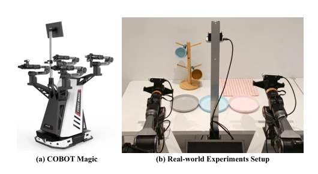
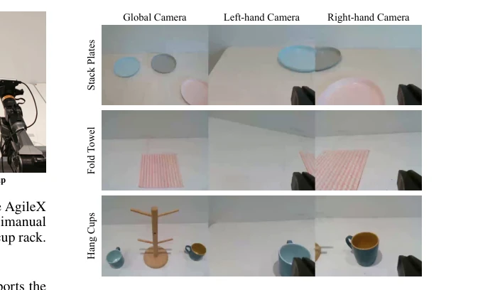
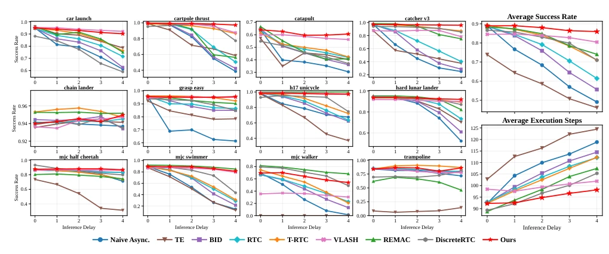

VLA inference based on Flow Matching is inherently slow; this method attempts to patch the pitfalls of asynchronous execution without modifying the backbone. The core pain point is accurately targeted: inference latency causes actions to be based on outdated information, leading to gaps and jitter. The authors did not touch the VLA backbone but added a "future adapter", which is quite clever. State Correction fixes proprioception, Observation Prediction fixes vision, forming a logical closed loop. But honestly, this thing is essentially "predicting the future"; physical priors rely on motion warp. What if the environment changes suddenly (e.g., someone suddenly reaches out to block the path)? Is this prediction accurate? In experiments, latency added to above 10ms works okay, but the real world has high noise; will this module overfit? Additionally, 5M parameters and 3ms latency are not small numbers for edge devices; do not hype it as "zero overhead". In short, it solves a tough problem, but it is not yet a "panacea".
研究动机Motivation
VLA 模型推理慢，同步执行导致机器人卡顿（stop-and-go），异步执行虽流畅但产生“预测 - 执行错位”（prediction-execution misalignment）。现有方法分两类：推理时（如 RTC, Black et al. 2025）仅平滑边界，治标不治本；训练时（如 VLASH, Tang et al. 2025）需重训策略，成本高。VLASH 虽修正了本体状态，却忽略了视觉观测的过时问题，导致大延迟下性能崩塌。根本矛盾在于：动作生成时用的是旧状态，执行时场景已变。如何在不修改 VLA 的前提下，让策略“看到”执行时刻的真实环境，是实时部署的关键。
VLA model inference is slow; synchronous execution causes robot stuttering (stop-and-go), while asynchronous execution is smooth but produces "prediction-execution misalignment". Existing methods are divided into two categories: inference-time (e.g., RTC, Black et al. 2025) only smooths boundaries, treating symptoms not root cause; training-time (e.g., VLASH, Tang et al. 2025) requires retraining policy, high cost. Although VLASH corrects proprioceptive state, it ignores the outdated problem of visual observation, leading to performance collapse under large latency. The fundamental contradiction lies in: old state is used when action is generated, but the scene has changed when executed. How to let the policy "see" the real environment at execution time without modifying VLA is the key to real-time deployment.

Figure 3: Illustration of the detailed architecture of the pro- posed adapter, which consists of a State Correction Mod- ule and an Observation Prediction Module to generate the execution-time observation and state from stale information.
The overall framework is a plug-and-play adapter ϕ(·), predicting observation and state at execution time during inference. The pipeline is: obtain old observation o_t and state s_t -> pass through SCM to correct proprioceptive state -> pass through OPM to predict visual features -> input to VLA to generate action. The SCM module uses MLP to predict residuals, compensating for cumulative bias of forward integration. OPM is the core, utilizing motion as physical prior, transforming old visual feature space to new position via motion-aware warping, and using synthesis gate to supplement occluded or newly appearing content, avoiding high cost of pixel-level reconstruction. Finally, Policy Consistency Loss is introduced, forcing predicted context-generated action distribution to be consistent with real execution time, ensuring the policy does not "hallucinate". This design allows VLA to adapt to asynchronous latency without retraining, achieving context alignment.

Figure 4: Illustration of the transport gate α (top) and syn- thesis gate β (bottom) during execution. The transport gate activates on the moving arm and gripper, propagating ex- isting visual features according to the committed motion, whereas the synthesis gate highlights motion boundaries and newly revealed regions that require feature synthesis.

Figure 5: Performance comparison in the Kinetix simula- tor (Black, Galliker, and Levine 2025) with different execu- tion methods across various inference delays d ∈[0, 4].
Tested on Kinetix and LIBERO simulation environments, and AgileX dual-arm robot real tasks (stacking plates, folding towels, hanging cups). Baselines include Naive Async, RTC, VLASH, etc.

Figure 1: Comparison of the inference-time method RTC (Black, Galliker, and Levine 2025), training-time method VLASH (Tang et al. 2025), and our FutureRTC on the real-world “Hang Cups” task with π0.5 (Black et al. 2025a) as the VLA backbone. Top: Task completion progress under asynchronous execution. Bottom: Average robot kinematics during task execution.

Figure 6: Real-world comparison on three bimanual manip- ulation tasks, Stack Plates, Fold Towel, and Hang Cups, with π0.5 (Black et al. 2025a) as the VLA policy.

Figure 7: Average action velocity and acceleration on the LIBERO (Liu et al. 2023) benchmark under d = 5 for π0.5 (Black et al. 2025a) (a) and SmolVLA-450M (Shukor et al. 2025) (b), comparing RTC (Black, Galliker, and Levine 2025), VLASH (Tang et al. 2025), REMAC (Wang et al. 2026a), and our FutureRTC. The left panel plots the ac- tion velocity (rad/s) and the right panel the action accel- eration (rad/s2) during execution, where previous methods exhibit pronounced acceleration spikes at the chunk bound- aries, whereas FutureRTC produces smoother trajectories.

Figure 8: Real-world experimental platform. (a) The AgileX Cobot Magic robot. (b) The workspace of the three bimanual tasks, containing the plates, towel, and cups with a cup rack.
其他图片Other Figures

Figure 9: Example demonstration sequences of the three real- world tasks: Stack Plates, Fold Towel, and Hang Cups.

Figure 10: Performance comparison in the Kinetix simulator (Black, Galliker, and Levine 2025) with different methods across various inference delays d ∈[0, 4]. Left: Success rate for individual tasks. Right: Average success rate and execution steps.